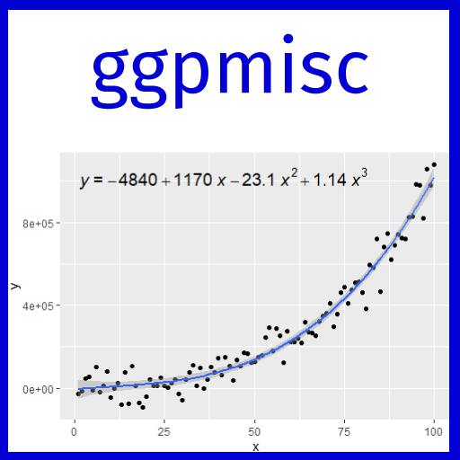

| ggpmisc-package {ggpmisc} | R Documentation |

Extensions to 'ggplot2' respecting the grammar of graphics paradigm. Statistics: locate and tag peaks and valleys; label plot with the equation of a fitted polynomial or other types of models including major axis, quantile and robust and resistant regression. Labels for P-value, R^2 or adjusted R^2 or information criteria for fitted models; parametric and non-parametric correlation; label with ANOVA table for fitted models; label with summary table for fitted models; annotations for multiple comparisons with adjusted P-values. Model fit classes for which suitable methods are provided by package 'broom' and 'broom.mixed' are supported as well as user-defined wrappers on model fit functions. Scales and stats to build volcano and quadrant plots based on outcomes, fold changes, p-values and false discovery rates.
Package 'ggpmisc' is over 10 years-old but its development has
tracked the changes in 'ggplot2' making use of new features. Although
fully compatible with 'ggplot2' (>= 4.0.0) its minimum requirement is
'ggplot2' (>= 3.5.0). Currently 'ggpmisc' focus is on statistical
annotations including fitted model equations and curves. Several special
geometries used are from package 'ggpp', which is imported and re-exported
in whole. These geometries and functions are documented in
ggpp-package.
Extensions provided:
Stats for annotaions for parametric and non-parametric correlations.
Statistics for generating labels for fitted models, including formatted equations. By default labels are R's plotmath expressions but LaTeX, markdown and plain text formatted labels are optionally assembled.
Matching statistics for plotting curves and confidence bands bands for the same fitted models.
Statistics for adding ANOVA tables and fitted model summaries as inset tables in plots.
Statistic for adding annotations based on pairwise multiple comparisons based on arbitrary contrasts and a choice of P adjustment methods.
Statistics for locating and tagging "peaks" and "valleys" (local or global maxima and minima).
Functions and objects exported by ggpp-package.
The stats for peaks and valleys are coded so as to work correctly both with numeric and POSIXct variables mapped to the x aesthetic.
The signatures of stat_peaks() and stat_valleys() from
'ggpmisc' are identical to those of stat_peaks() and
stat_valleys() from package 'ggspectra'. While those from 'ggpmisc'
are designed for numeric or time objects mapped to the x aesthetic,
those from 'ggspectra' are for light spectra and expect a numeric variable
describing wavelength mapped to the x aesthetic.
Maintainer: Pedro J. Aphalo pedro.aphalo@helsinki.fi (ORCID)
Other contributors:
Kamil Slowikowski (ORCID) [contributor]
Samer Mouksassi samermouksassi@gmail.com (ORCID) [contributor]
Expanded on-line documentation for 'ggpmisc' at
https://docs.r4photobiology.info/ggpmisc/ and source code at
https://github.com/aphalo/ggpmisc
Expanded on-line documentation for 'ggpp' at
https://docs.r4photobiology.info/ggpp/ and source code at
https://github.com/aphalo/ggpp
Package 'ggplot2' documentation at
https://ggplot2.tidyverse.org/
Useful links:
Report bugs at https://github.com/aphalo/ggpmisc/issues
ggplot(lynx, as.numeric = FALSE) + geom_line() +
stat_peaks(colour = "red") +
stat_peaks(geom = "text", colour = "red", angle = 66,
hjust = -0.1, x.label.fmt = "%Y") +
ylim(NA, 8000)
formula <- y ~ poly(x, 2, raw = TRUE)
ggplot(cars, aes(speed, dist)) +
geom_point() +
stat_poly_line(formula = formula) +
stat_poly_eq(use_label("eq", "R2", "P"),
formula = formula,
parse = TRUE) +
labs(x = expression("Speed, "*x~("mph")),
y = expression("Stopping distance, "*y~("ft")))
formula <- y ~ x
ggplot(PlantGrowth, aes(group, weight)) +
stat_summary(fun.data = "mean_se") +
stat_fit_tb(method = "lm",
method.args = list(formula = formula),
tb.type = "fit.anova",
tb.vars = c(Term = "term", "df", "M.S." = "meansq",
"italic(F)" = "statistic",
"italic(p)" = "p.value"),
tb.params = c("Group" = 1, "Error" = 2),
table.theme = ttheme_gtbw(parse = TRUE)) +
labs(x = "Group", y = "Dry weight of plants") +
theme_classic()